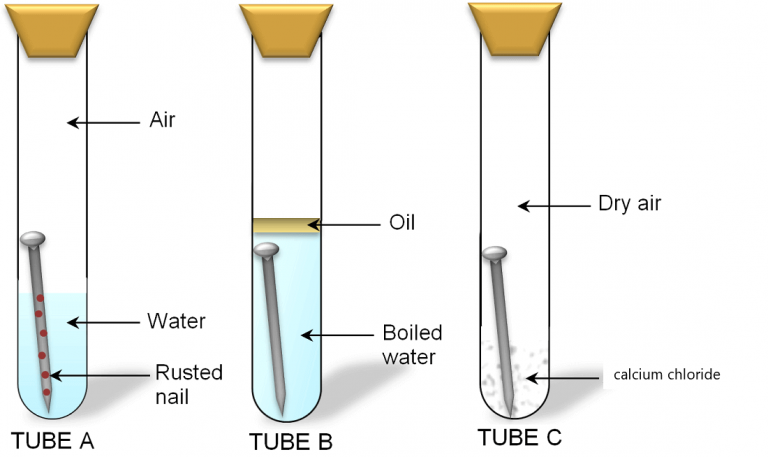

2019 BECE Science Past Questions – Paper Two
Answer Question 1 in Section A and any other three questions in Section B. Credit will be given for clarity of expression and orderly presentation of material
Section A
1.(a)In an experiment, the surfaces of three iron nails were cleaned dry and placed in three separate test tubes A, B and C as shown in the diagram.Study the diagram carefully and answer the questions that follow

After three days the nail in test tube A was found to have rusted while the nail in test tubes B and C did not rust.
(i)Suggest and aim for the experiment.
(ii) Why was the water in test tube B boiled?
(iii) State the function of the oil on top of the water in test tube B.
(iv) What is the purpose of the calcium chloride in test tube C?
(v) Why did the nail in Test A rust?
(vi) Why did the nail in test tube
(α)B did not rust?
(β)C did not rust?
(vii) From the experiment, explain why oil is applied on the surface of a metal to prevent rusting.
[10 marks](b) In an experiment, the following activities were carried out on two green leaves A and B. Leaf A was taken from a plant placed in the sunlight for some time while leaf V was taken from a plant placed in a dark cupboard for 24 hours.
Activity.
I.Leaves dipped in boiling water for 1 minute
II. Leaves dipped in warm alcohol
III. Leaves washed in cold water
IV. Leaves dipped in iodine solution
After dipping in the iodine solution, it was observed that leaf A changed colour. Study the activities carefully and answer the questions that follow.
(i) Suggest an aim for the experiment.
(ii) Explain briefly why each of the following activities were carried out:
(α)I
(β)II
(γ)III
(iii) State the colour change of leaf A.
(iv) Explain why leaf A changed colour?
(v) Why is it necessary to de-starch the plant before starting the experiment?
(vi)From the above experiment, what conclusions(s) can be drawn.
(c) You are provided with two dry soil samples A and B, a measuring cylinder, beakers, funnels, filter paper, beam balance, stop watch and water. With the aid of a labelled diagram, describe an experiment to find out which of the two soil samples can hold more water.
(d) The diagram below is an illustration of an experiment that was carried out. In the experiment three pins 1, 2 and 3 were fixed with candle wax onto a metal bar and one end of the bar was heated by means of boiling water. A, B and C are the thermometers inserted in holes along the bar to measure the temperatures at the various points.
Study the diagram carefully and answer the questions that follow.

(i) Suggest an aim for the experiment?
(ii) What is the temperature of the boiling water?
(iii) State the observations that would be made about the pins 1, 2 and 3.
(iv) State the observations that would be made about the temperatures
Recorded by the thermometers A, B and C.
(v) State how heat from the sun is transmitted to the earth.
Select Voices
SECTION B
[45 marks]
(ii) Why is the plant in any food chain referred to as the producer?
(iii) What is the term given to the other organisms that depend directly or indirectly on the producers for food.
(b) The diagram below is an illustration of the picture obtained on a screen when an opaque object is placed in the path of a light source. Study the diagram and answer the questions that follow.

(i) Name each of the shadows that is cast on the screen;
(α)A
(β)B
ii) What does the shadow of the object cast on the screen illustrate?
(c) Describe briefly how a sample of pure sugar could be obtained from a mixture of sugar and sand.
(d) State three ways by which soil can be conserved.
Select Voices
(i) State the name of the energy possessed by the object by reason of its new position.
(ii) Calculate value of this energy. [g=10 ms-2]
(b) (i) What is matter?
(ii) State two of the states of matter.
(c) (i) Describe the nature of loamy soil.
(ii) Name any two plant nutrients.
(d) (i) State one causative organism for each of the following diseases:
(α) cholera
(β) tuberculosis
(ii) State one method of prevention of cholera.
Select Voices
(b) State the dangers involved in each of the following activities in the laboratory:
(i) eating or drinking water in the laboratory.
(ii) Walking barefooted;
(iii) washing hands with unknown liquid in a beaker.
(c) A child is found not to be able to see at night.
(i) what deficiency disease may the child be suffering from?
(ii) what food nutrient is the child lacking?
(iii) State three sources of food substances that can provide the nutrient that child lacks.
(d) (i) What is a force?
(ii) Explain briefly why a driver a could not stop a car on a slippery section of a road when he applied the brake.
Select Voices
(b) State three characteristics of living things.
(c) (i) what us pollution?
(ii) Name one air pollutant.
(d) State three factors which influence vegetable crop production.